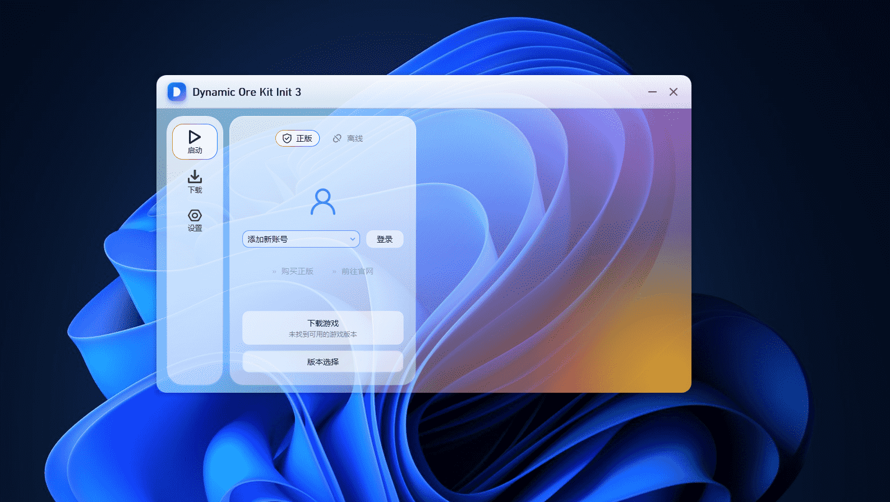

DOKI III
Dynamic Ore Kit Init 3
把 Minecraft 装进一块玻璃里。
液态玻璃界面，丝滑动效，从第一眼到每一次启动。

每一个细节，都值得认真对待
不换皮，把整台启动器重新做了一遍。
液态玻璃界面
半透明毛玻璃层层叠叠，开关与卡片拥有真实光泽与景深。
八套配色方案
一次点击全局即时生效，找到最适合你的那一套。
版本与整合包
原版与多种模组加载器全支持，整合包一键安装。
资源社区
Mod、整合包、数据包、资源包、光影包一处检索。
正版 / 离线双模式
多账号快速切换，头像、皮肤与档案各自独立。
尺寸由你决定
背景透明、不透明度、浓度逐项可调。
一屏之内，万事俱备
八套配色，随心而变
点一下试试，整页强调色会像液体一样流动过去。
关于 DOKI III，你可能想知道
下载、运行与版本相关的常见疑问，都在这里。
DOKI III 是什么？
DOKI III 支持哪些系统？
DOKI III 需要付费吗？
为什么下载功能无法使用？
DOKI III 可以更换主题配色吗？
当前版本是否稳定？
关于 DOKI III 启动器
DOKI III（全称 Dynamic Ore Kit Init 3）是一款面向 Windows 平台的 Minecraft 我的世界启动器，专注于把界面体验做到极致。它采用 iOS 26 风格的液态玻璃视觉语言，窗口、卡片、导航与按钮都以半透明磨砂质感呈现，页面切换、标签滑动与配色切换均配有弹簧曲线动效。
在功能层面，DOKI III 覆盖日常游戏所需的完整链路：原版游戏版本下载与安装、模组与整合包管理、资源包与光影包获取、正版账号登录与离线账号切换，以及 Java 环境与游戏参数配置。所有操作都能在三个主标签页内完成，不需要在多个窗口之间来回跳转。
个性化是该启动器的核心特色之一。设置中提供背景透明开关、整体不透明度与背景浓度滑条，以及冰川蓝、紫罗兰、翡翠森林、落日暖橙、玫瑰晨曦、深海午夜、薄荷汽水、钛金灰八套配色方案，切换时整页强调色会平滑过渡，而不是生硬地跳变。
DOKI III 由 DOKI 团队独立开发与维护，以 ZIP 压缩包形式分发，解压即用，无需安装程序，也不写入系统级服务。当前对外发布的是开发预览版本，功能仍在持续完善中，欢迎在实际体验中反馈使用感受。
本页面最后更新于 2026 年 10 月 21 日。
准备好开始了吗？
下载完整开发预览包，解压到任意位置即可使用，无需额外安装步骤。本版本为半成品，仅供测试。